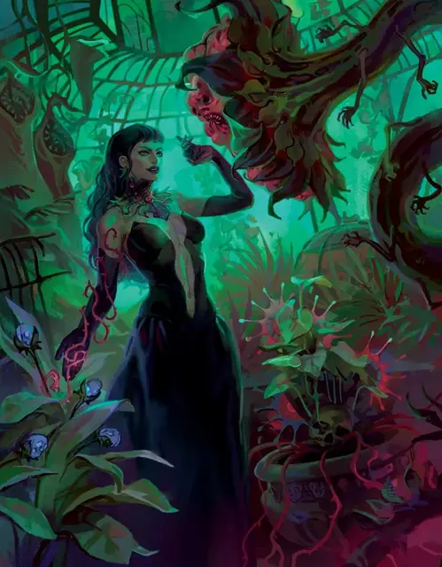

Иванна Борицы
Ivana Boritsi
Средний Гуманоид (Человек), Нейтральный Злой, именной НИП

Класс Защиты 17 Инициатива +9 (19)
Хиты 104 (16к8 + 32)
Скорость 30 футов
| мод | спас | ||
|---|---|---|---|
| СИЛ | 10 | +0 | +0 |
| ЛОВ | 17 | +3 | +6 |
| ТЕЛ | 14 | +2 | +5 |
| мод | спас | ||
|---|---|---|---|
| ИНТ | 18 | +4 | +4 |
| МДР | 15 | +2 | +2 |
| ХАР | 14 | +2 | +2 |
Иммунитеты Яд; Отравленный
Чувства пассивное Восприятие 15
Языки Общий
Опасность 5 (1 800 опыта или 2 300 опыта в Домене; БВ +3)
Особенности
Восстановление Тёмной владычицы. Спустя 1к10 недель после смерти Иванна возрождается с полными Хитами где-то в Борче.
Легендарное сопротивление (2/день, или 3/день в Домене). Если Иванна проваливает спасбросок, она вместо этого может в нём преуспеть.
Действия
Мультиатака. Иванна совершает две атаки Токсичным касанием.
Токсичное касание. Бросок рукопашной атаки: +7, досягаемость 5 фт. Попадание: 8 (1к8 + 4) урона Ядом. Если Гуманоид, чьи Хиты уменьшены этим уроном до 0, не вокрешён и его не тело не уничтожено, то спустя 24 часа он восстаёт в качестве Вьющейся заразы, находящейся под контролем Иванны.
Сшибающий парфюм (Перезарядка 5–6). Спасбросок Телосложения: Сл 15, все существа в 30-футовой Эманации, исходящей от Иванны. Провал: 13 (3к8) урона Ядом, и цель Опрокидывается. Успех: Только половина урона.
Бонусные действия
Очарование. Иванна сотворяет Очарование личности, не нуждаясь в компонентах (заклинательная характеристика — Интеллект, Сл спасброска заклинаний 15), а длительность заклинания равна 24 часам.
Древесный путь. Если Иванна находится в пределах 5 футов от неодушевлённого растения не меньше Большого размера, она телепортируется в незанятое пространство в пределах 5 футов от второго растения не меньше Большого размера, находящегося в пределах 60 футов от первого растения.
Легендарные действия
У этого существа есть 2 использования Легендарных действий (или 3 использования в Домене); оно может немедленно после окончания хода другого существа потратить одно использование, чтобы совершить одно из следующих действий. Существо восполняет все потраченные использования в начале каждого своего хода.
Ответный удар. Иванна совершает одну атаку Токсичным касанием.
Волна токсинов. Спасбросок Ловкости: Сл 15, все существа в 15-футовом Конусе. Провал: Цель Отравлена до конца своего следующего хода. Отравленная таким образом цель вычитает 1к6 из своих бросков урона. Провал или успех: Иванна не может совершить это действие снова до начала своего следующего хода.
Бонус мастерства +3
Иванна Борицы
Тёмная владычица ядовитых амбиций
Иванна Борицы устала от игр, в которых никто даже не замечает, что она давно победила. Глава самого влиятельного семейства Борчи, она играючи манипулирует всеми слоями общества. Слуги, наёмные работники и склочные кузены и кузины подводят её с удручающим постоянством, вынуждая лично заниматься утомительными обязанностями и посещать светские приёмы, лишь бы удержать власть.
Иванна выглядит вечно юной, отчего кое-кто сомневается в её деловых качествах и приписывает все успехи её старшему кузену Ивану Дилиснии. От предсказуемых людей с их скучными страстями, которые только раздражают, она спасается в алхимических опытах и оранжереях ядовитых растений. Глубочайшее знание токсинов делает её непревзойдённой отравительницей. Свои творения она использует, чтобы делать людей более сговорчивыми — и устранять тех, кого считает слишком непочтительными и недостойными жизни. Втайне Иванна мечтает отыскать индивида равного ума, который развеял бы её скуку, но быстро пресыщается даже самыми обаятельными и остроумными собеседниками.
История Иванны
Иванна Борицы, первеница сказочно богатого семейства, была умна, отменно воспитана — и, по мнению отца, Клауса, никак не годилась в наследницы. Стремясь доказать отцу обратное и подталкиваемая матерью, Камиллой, Иванна изучила все тонкости фамильного дела — огромной парфюмерной и аптекарской империи.
Целеустремлённость её пошатнулась, когда она познакомилась с Петром — одарённым химиком, работавшим при её семье. Камилла заметила, как в дочери пробуждается романтическое чувство, и сочла простолюдина Петра угрозой для её будущего. Она соблазнила его и подстроила всё так, чтобы дочь застала их вместе — в надежде навсегда отвадить девушку от любых сердечных привязанностей.
Иванна вынесла из этого иной урок. Воочию убедившись, как глубока порочность её семьи, она отравила мать и бессердечных младших братьев ядами собственного изобретения. Никто не заподозрил Иванну, но вскоре Клаус призвал её. Потеряв сыновей, он назначил наследником её кузена, Ивана Дилиснию. О решении отца Иванна узнала последней: тот успел объявить свою волю всей усадьбе и отправил гонца к Дилисням.
Иванна ждала подобного исхода и заранее отравила парфюмерные чаны в поместье, обратив благоухающие ароматы в смертельный яд. Когда усадьбу заволокло токсичным туманом, Иванна смеялась. Пригубив противоядие, она смотрела, как Клаус и вся дворня задыхаются в фиолетовом мареве. Когда отрава рассеялась, Туманы уже сомкнулись вокруг Борчи, отрезая её от остального мира.
Домен Иванны и Ивана
Борча, домен Иванны и Ивана, изменяется из-за их присутствия, что создаёт следующие эффекты:
• Закрытие границ. Когда Иванна находится в домене, она способна по желанию закрывать или открывать границы Борчи. Когда границы закрыты, Туманы вокруг Борчи наполняются колючим терновником. Туманы становятся Труднопроходимой местностью; когда существо входит в Туманы или перемещается внутри них, оно получает 2к4 Колющего урона за каждые пройденные 5 футов. Как только Иванна или Иван закрывают или открывают границы, ни один из Тёмных владык не может сделать это снова до следующего рассвета.
• Нашёптывания Иванны. На рассвете Иванна может нашептать сообщение (не более 25 слов) цветам в Борче. До следующего рассвета впервые, когда существо вдыхает аромат цветка, оно слышит сообщение в своём сознании и понимает его смысл независимо от языка.
• Шпионы. Когда Иванна находится в домене, она может сотворять Подсматривание, не нуждаясь в Материальных компонентах (заклинательная характеристика — Интеллект). Для срабатывания заклинания в пределах дистанции должно быть растение не меньше Большого размера, из которого возникает магический сенсор.
Если один из Тёмных владык умирает, все его эффекты мгновенно исчезают. Они возникают снова, если тот возрождается (см. Восстановление Тёмной владычицы).